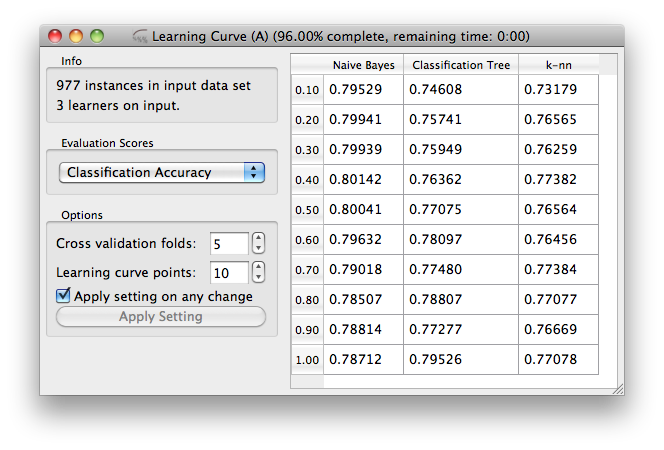

This is documentation for Orange 2.7. For the latest documentation, see Orange 3.
Channels and Tokens¶
Our data sampler widget was, regarding the channels, rather simple and linear: the widget was designed to receive the token from one widget, and send an output token to another widget. Just like in an example schema below:
There’s quite a bit more to channels and management of tokens, and we will overview most of the stuff you need to know to make your more complex widgets in this section.
Multi-Input Channels¶
In essence, the basic idea about “multi-input” channels is that they can be used to connect them with several output channels. That is, if a widget supports such a channel, several widgets can feed their input to that widget simultaneously.
Say we want to build a widget that takes a data set and test various predictive modeling techniques on it. A widget has to have an input data channel, and this we know how to deal with from our previous lesson. But, somehow differently, we want to connect any number of widgets which define learners to our testing widget. Just like in a schema below, where three different learners are used:

We will here take a look at how we define the channels for a learning curve widget, and how we manage its input tokens. But before we do it, just in brief: learning curve is something that you can use to test some machine learning algorithm in trying to see how its performance depends on the size of the training set size. For this, one can draw a smaller subset of data, learn the classifier, and test it on remaining data set. To do this in a just way (by Salzberg, 1997), we perform k-fold cross validation but use only a proportion of the data for training. The output of the widget should then look something like:
Now back to channels and tokens. Input and output channels for our widget are defined by
self.inputs = [("Data", Orange.data.Table, self.set_dataset),
("Learner", Orange.classification.Learner, self.set_learner,
Multiple + Default)]
Notice that everything is pretty much the same as it was with widgets from previous lessons, the only difference being Multiple + Default (importable from the OWWidget namespace) as the last value in the list that defines the Learner channel. This Multiple + Default says that this is a multi-input channel and is the default input for its type. If it would be unspecified then by default value of Single + NonDefault would be used. That would mean that the widget can receive the input only from one widget and is not the default input channel for its type (more on default channels later).
Note
Default flag here is used for illustration. Since “Learner” channel is the only channel for a Orange.classification.Learner type it is also the default.
How does the widget know from which widget did the token come from? In Orange, tokens are sent around with an id of a widget that is sending the token, and having a multi-input channel only tells Orange to send a token together with sending widget id, the two arguments with which the receiving function is called. For our “Learner” channel the receiving function is set_learner(), and this looks like the following
def set_learner(self, learner, id=None):
ids = [x[0] for x in self.learners]
if learner is None: # remove a learner and corresponding results
if not ids.count(id):
return # no such learner, removed before
indx = ids.index(id)
for i in range(self.steps):
self.curves[i].remove(indx)
del self.scores[indx]
del self.learners[indx]
self.updateTable()
else:
if ids.count(id): # update (already seen a learner from this source)
indx = ids.index(id)
self.learners[indx] = (id, learner)
if self.data:
curve = self.getLearningCurve([learner])
score = [self.scoring[self.scoringF][1](x)[0] for x in curve]
self.scores[indx] = score
for i in range(self.steps):
self.curves[i].add(curve[i], 0, replace=indx)
else: # add new learner
self.learners.append((id, learner))
if self.data:
curve = self.getLearningCurve([learner])
score = [self.scoring[self.scoringF][1](x)[0] for x in curve]
self.scores.append(score)
if len(self.curves):
for i in range(self.steps):
self.curves[i].add(curve[i], 0)
else:
self.curves = curve
if len(self.learners):
self.infob.setText("%d learners on input." % len(self.learners))
else:
self.infob.setText("No learners.")
self.commitBtn.setEnabled(len(self.learners))
if self.data:
self.updateTable()
OK, this looks like one long and complicated function. But be patient! Learning curve is not the simplest widget there is, so there’s some extra code in the function above to manage the information it handles in the appropriate way. To understand the signals, though, you should only understand the following. We store the learners (objects that learn from data) in the list self.learners. The list contains tuples with an id of the widget that has sent the learner, and the learner itself. We could store such information in a dictionary as well, but for this particular widget the order of learners is important, and we thought that list is a more appropriate structure.
The function above first checks if the learner sent is empty (None). Remember that sending an empty learner essentially means that the link with the sending widget was removed, hence we need to remove such learner from our list. If a non-empty learner was sent, then it is either a new learner (say, from a widget we have just linked to our learning curve widget), or an update version of the previously sent learner. If the later is the case, then there is an ID which we already have in the learners list, and we need to replace previous information on that learner. If a new learner was sent, the case is somehow simpler, and we just add this learner and its learning curve to the corresponding variables that hold this information.
The function that handles learners as shown above is the most complicated function in our learning curve widget. In fact, the rest of the widget does some simple GUI management, and calls learning curve routines from testing and performance scoring functions from stats. I rather like the easy by which new scoring functions are added to the widget, since all that is needed is the augmenting the list
self.scoring = [("Classification Accuracy", Orange.evaluation.scoring.CA),
("AUC", Orange.evaluation.scoring.AUC),
("BrierScore", Orange.evaluation.scoring.Brier_score),
("Information Score", Orange.evaluation.scoring.IS),
("Sensitivity", Orange.evaluation.scoring.Sensitivity),
("Specificity", Orange.evaluation.scoring.Specificity)]
which is defined in the initialization part of the widget. The other useful trick in this widget is that evaluation (k-fold cross validation) is carried out just once given the learner, data set and evaluation parameters, and scores are then derived from class probability estimates as obtained from the evaluation procedure. Which essentially means that switching from one to another scoring function (and displaying the result in the table) takes only a split of a second. To see the rest of the widget, check out its code.
Using Several Output Channels¶
There’s nothing new here, only that we need a widget that has several output channels of the same type to illustrate the idea of the default channels in the next section. For this purpose, we will modify our sampling widget as defined in previous lessons such that it will send out the sampled data to one channel, and all other data to another channel. The corresponding channel definition of this widget is
self.outputs = [("Sampled Data", Orange.data.Table),
("Other Data", Orange.data.Table)]
We used this in the third incarnation of data sampler widget, with essentially the only other change in the code in the selection() and commit() functions
def selection(self):
indices = Orange.data.sample.SubsetIndices2(p0=self.proportion / 100.)
ind = indices(self.dataset)
self.sample = self.dataset.select(ind, 0)
self.otherdata = self.dataset.select(ind, 1)
self.infob.setText('%d sampled instances' % len(self.sample))
def commit(self):
self.send("Sampled Data", self.sample)
self.send("Other Data", self.otherdata)
If a widget that has multiple channels of the same type is connected to a widget that accepts such tokens, Orange Canvas opens a window asking the user to confirm which channels to connect. Hence, if we have just connected Data Sampler (C) widget to a Data Table widget in a schema below:
we would get a following window querying users for information on which channels to connect:
Default Channels (When Using Input Channels of the Same Type)¶
Now, let’s say we want to extend our learning curve widget such that it does the learning the same way as it used to, but can - provided that such data set is defined - test the learners (always) on the same, external data set. That is, besides the training data set, we need another channel of the same type but used for training data set. Notice, however, that most often we will only provide the training data set, so we would not like to be bothered (in Orange Canvas) with the dialog which channel to connect to, as the training data set channel will be the default one.
When enlisting the input channel of the same type, the default channels have a special flag in the channel specification list. So for our new learning curve widget, the channel specification is
self.inputs = [("Train Data", Orange.data.Table, self.trainset, Default),
("Test Data", Orange.data.Table, self.testset),
("Learner", Orange.classification.Learner,
self.learner, Multiple)]
That is, the Train Data channel is a single-token channel which is a default one (third parameter). Note that the flags can be added (or OR-d) together so Default + Multiple is a valid flag. To test how this works, connect a file widget to a learning curve widget and - nothing will really happen:
That is, no window with a query on which channels to connect to will open, as the default “Train Data” was selected.